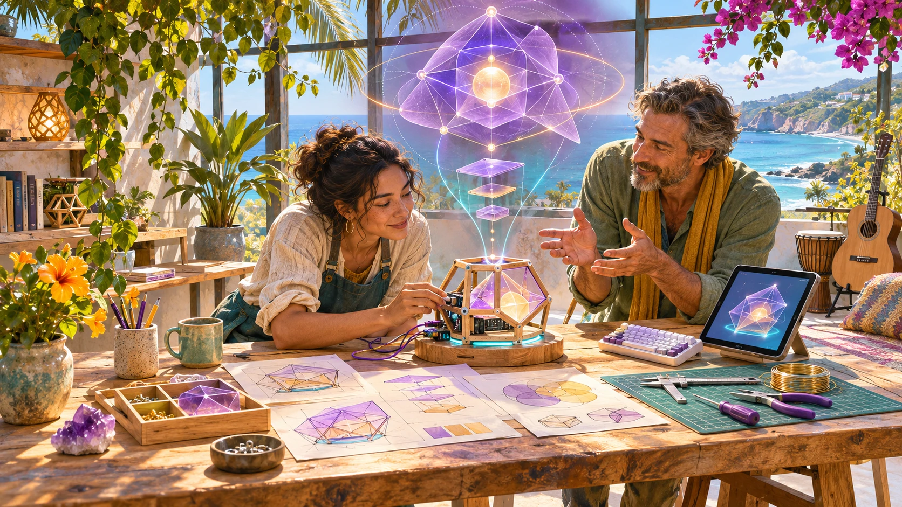

Artwork photographs and font credits
Generated artwork describes possible experiences. The photographs show actual places. Neither is evidence of a functioning Geode installation, a delivered programme or an endorsement.
Original generated artwork
The coastal workshop illustration was created for this project on 10 November 2026. The new stylised nested-surface favicon was generated on 11 November 2026 with the built-in image tool after inspecting the Aura references. It is a small concept emblem, not a precision geometry rendering. The original rock-geode hero and icon have been superseded. See the original image manifest and new favicon’s complete prompt and provenance. The original material follows the Strange But True Public Source Licence.

Geode and Verse Box project references
The HBOT Geode image is copied unchanged from Aura Genesis Geode Atlas, hero-index-v3.webp, a generated concept of its seated active workspace. The Verse Box image is the supplied single-skin reference from Aura Verse Box, documents/verse-box-supplied-reference.jpg, copied unchanged. They preserve the existing project layouts; neither records a completed installation. Their existing project and source rights remain in effect. See source identities and hashes and the settings guide.
Real photographs
Main Beach from Point Lookout, 2014. Photograph by S. Newrick, CC BY-SA 4.0, via Wikimedia Commons.
.JPG){kind=link}
Cleveland Point Light, 2016. Photograph by Kgbo, CC BY-SA 4.0, via Wikimedia Commons.

Commons-provided 1280px files were copied unchanged from the existing campaign project. Responsive display may crop them. These photographs retain their own Creative Commons licences and are not relicensed under Strange But True. Full photo provenance and hashes.
Fonts
Archivo: Copyright 2020 The Archivo Project Authors, distributed under the SIL Open Font License. JetBrains Mono: Copyright 2020 The JetBrains Mono Project Authors, distributed under the SIL Open Font License.
Spatial source preview
The memory and action diagram is a reconstruction of the actual source region in LifeLogging Part 1, Sheet1 B97:H136. It is not a generated psychological model. See the matrix reading guide for limits and source locations.